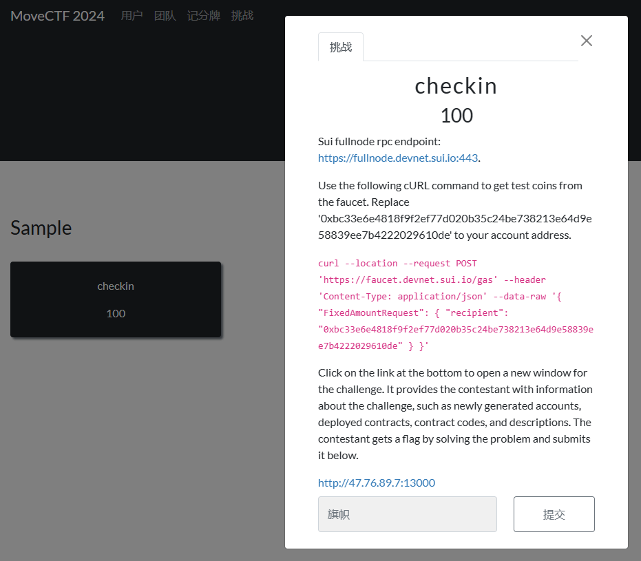
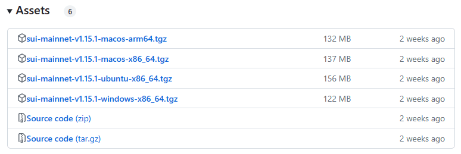
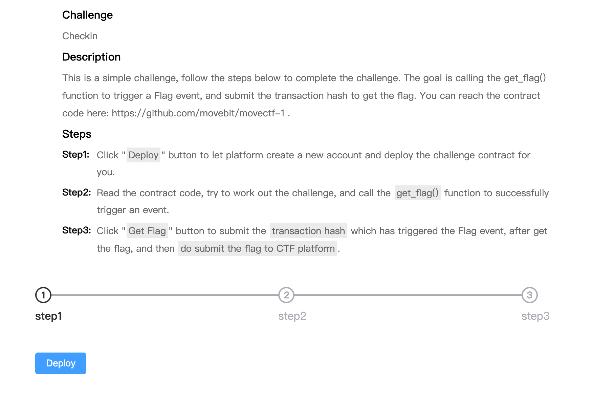
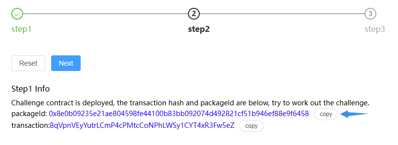
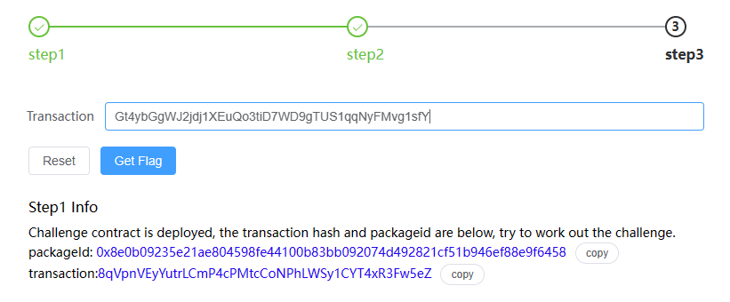
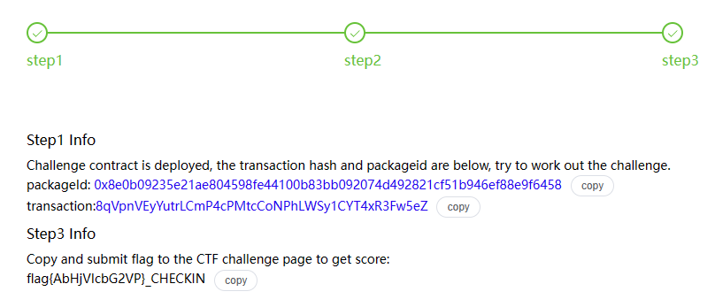

开始之前¶

初次看到题是否有些懵？在开始之前，我们先给大家介绍一下这个题面的构成。
在传统CTF中，我们的动态题目通常使用Docker实现，这一点在区块链题目中稍有不同。
在区块链题目中，题目通常是围绕一个运行中的区块链网络展开的。这个网络可以是一个公共的测试网，也可以是专门为比赛搭建的私有网络。
而题目的交互则由 全节点RPC端点 (Fullnode rpc endpoint) 实现 —— 区块链网络中的全节点提供了一个RPC（远程过程调用）接口，允许选手通过网络请求与区块链交互。这就是题目中提到的 Sui fullnode rpc endpoint的作用。
如下便是本题目运行的网络，也是答题需要接入的测试网。
当然这种独特的交互方式从一定意义上影响了环境需求 —— 选手可能需要配置特定的区块链开发环境，从而实现连接到指定的RPC端点。
Use the following cURL command to get test coins from the faucet. Replace '0xbc33e6e4818f9f2ef77d020b35c24be738213e64d9e58839ee7b4222029610de' to your account address.
curl --location --request POST 'https://faucet.devnet.sui.io/gas' --header 'Content-Type: application/json' --data-raw '{ "FixedAmountRequest": { "recipient": "<Your_Addresses>" } }'
在区块链中，每一个动作都需要一定的成本，我们称之为 Gas ，即衡量动作消耗的计算资源的基本单位，每次操作都会以 Gas * Gas Price ，即单位 Gas 所需的手续费，扣除你的对应币种。
这里给出了测试币的获取方法，在Sui中，地址由 32 字节（bytes）组成，经常以 base58 编码形式呈现，并带有 0x 前缀，如示例中给出的形式。
在配置好Sui的开发环境后，使用 sui client addresses 可获取你的账户地址，别担心，我们后面会详细的介绍如何配置好Sui的开发环境。
然后按照题目中给出的curl指令向测试网络发送对应请求即可领取测试币。
这个底部的链接就是题面，在题面中会告知你需要完成的任务。
完成对应任务后即可获取flag。
环境配置¶
前面我们说到区块链题目独特的交互方式会产生一定的环境需求，对于MoveCTF来讲，我们需要配置Sui的开发环境才能进行答题。
对于Sui的环境配置有多种方法，Mac可以最简单的使用 homebrew 一键安装。
而 Windows 和 Linux 这需要依赖 Rust和Cargo 进行编译安装。
当然 也可以直接下载官网编译好的二进制文件使用。
或者如果你熟悉 docker 也可以使用docker进行构建。
二进制文件自动化构建¶
在终端中依次运行:
没有Homebrew？> 使用下面命令一键安装
在PowerShell中运行下面命令(Author: 不霁何虹@WGB5445)
使用Docker构建¶
拉取官方的Docker镜像并使用容器中的终端。
docker pull mysten/sui-tools:devnet
docker run --name suidevcontainer -itd mysten/sui-tools:devnet
docker exec -it suidevcontainer bash
使用二进制文件手动安装¶
在官方GitHub仓库的Release中有编译好的二进制文件
/> https://github.com/MystenLabs/sui/releases
Release 提供四种不同类型的操作系统的二进制文件：

下载对应系统的压缩包后解压你能得到类似于下面结构：
+ target
+ release
- sui-faucet-ubuntu-x86_64
- sui-node-ubuntu-x86_64
- sui-test-validator-ubuntu-x86_64
- sui-tool-ubuntu-x86_64
- sui-ubuntu-x86_64
external-crates\move\target\release\move-analyzer-ubuntu-x86_64
文件名格式为 sui-<操作系统>-<架构>：
- sui-faucet-
<操作系统>-<架构>：本地网络上用于铸币的工具。 - sui-indexer-
<操作系统>-<架构>：本地 Sui 网络的索引器。 - sui-
<操作系统>-<架构>：Sui 的主要执行文件。 - sui-node-
<操作系统>-<架构>：用于运行本地节点。 - sui-test-validator-
<操作系统>-<架构>：用于开发的本地网络测试验证器。 - sui-tool-
<操作系统>-<架构>：提供 Sui 相关的工具。
然后你需要做的就是将这些文件放在一起，移除掉 -<操作系统>-<架构> 部分，再将他们添加到系统的环境变量中。
假设，你已经处理了所有文件并将它们放在了当前目录的 sui 文件夹中，那么对应不同系统的操作如下：
打开“控制面板” > “系统和安全” > “系统” > “高级系统设置”。
在“系统属性”窗口中，点击“环境变量”。
在“系统变量”区域中找到并选择“Path”变量，然后点击“编辑”。
在“编辑环境变量”窗口中，点击“新建”并添加Sui文件夹的路径。假设Sui文件夹位于 C:\sui，则添加 C:\sui。
点击“确定”保存更改。
完成上述操作后便能在命令行中使用 sui 命令。
编译安装¶
必要组件¶
当你选择要进行 编译安装 时，你需要根据你的系统安装对应的必要依赖。
Linux 操作系统需要以下必要依赖：
- cURL
- Rust 和 Cargo
- Git 命令行界面（CLI）
- CMake
- GNU 编译器集合（GCC）
- libssl-dev
- libclang-dev
- libpq-dev
- build-essential
使用下面命令一键安装
sudo apt-get install -y curl git-all cmake gcc libssl-dev pkg-config libclang-dev libpq-dev build-essential
如果您的 Linux 版本在安装 libssl-dev、libclang-dev 或 libpq-dev 存在问题，请点击对应的链接寻找等价包。
Windows 10 / 11 操作系统需要以下必要依赖：
- cURL
- Rust 和 Cargo
- Git 命令行界面（CLI）
- CMake
- C++ 构建工具
- LLVM 编译器
cURL
Windows 11 预装了 Microsoft 版本的 cURL。如果您更喜欢使用 curl 项目的版本，请从 https://curl.se/windows/ 下载并安装。
Git 命令行界面
请从 Git 官网 下载并安装 Git 命令行界面。
CMake
请访问 CMake 官网 CMake 下载并安装 CMake。
Protocol Buffers
下载 Protocol Buffers（protoc-xx.x-win32.zip 或 protoc-xx.x-win64.zip），并将 \bin 目录添加到您的 Windows PATH 环境变量。
Windows 的附加工具
在 Windows 系统上运行 Sui 需要以下附加工具：
- 安装 Rust 需要 C++ 构建工具。（即请确定在安装Rust的时候配置了MVC环境）
- [LLVM 编译器](https://releases.llvm.org/
安装 Rust 及 Cargo¶
在编译安装的过程中，由Cargo构建依赖，由Rust来完成编译。
在 macOS 或 Linux 上安装 Rust 和 Cargo，请使用以下命令，这也是我们推荐的安装方式。
如果您使用的是 Windows 10/11，请参阅 Rust 官网上的 Rust 安装程序 相关信息。该安装程序会检查您是否安装了 C++ 构建工具，并在需要时提示您安装。请选择最适合您环境的选项，并按照安装向导的指示进行操作。
想了解更多安装选项，请访问 安装 Rust。
Sui 使用最新版本的 Cargo 来构建项目和管理其依赖。更多信息请参阅 Rust 官网的 Cargo 安装 页面。
使用以下命令通过 rustup 更新 Rust 至稳定版：
安装Sui¶
当一切准备就绪，键入下面命令等待几杯咖啡的时间即可完成 Sui 的安装：
⚠️请确保在运行该命令的时候 所有必要依赖已经配置完全，终端已经重启，否则一个报错就会使长达2000多项编译从头来过！
安装完成后，使用 sui -version 命令检查安装情况。
及时清理临时目录缓存。
解题时间¶
题面¶

module movectf::checkin {
use sui::event;
use sui::tx_context::{Self, TxContext};
struct Flag has copy, drop {
user: address,
flag: bool
}
public entry fun get_flag(ctx: &mut TxContext) {
event::emit(Flag {
user: tx_context::sender(ctx),
flag: true
})
}
}
思路¶
题目已经给出了任务要求和合约代码：
调用 get_flag() 函数触发 Flag 事件，提交 交易哈希 即可获取 flag。
部署¶
点击 Deploy 部署合约，获取自己的 PACKAGE-ID。

Step1 Info
Challenge contract is deployed, the transaction hash and packageid are below, try to work out the challenge.
packageId: 0x8e0b09235e21ae804598fe44100b83bb092074d492821cf51b946ef88e9f6458
transaction:8qVpnVEyYutrLCmP4cPMtcCoNPhLWSy1CYT4xR3Fw5eZ
链接到测试网¶
首先我们链接到题目部署的测试网络，大概步骤如下：
> sui client
Config file ["/home/tj/.sui/sui_config/client.yaml"] doesn't exist, do you want to connect to a Sui Full node server [y/N]?y
Sui Full node server URL (Defaults to Sui Devnet if not specified) : https://fullnode.devnet.sui.io:443
Environment alias for [https://fullnode.devnet.sui.io:443] : moveCTF2024
Select key scheme to generate keypair (0 for ed25519, 1 for secp256k1, 2: for secp256r1):
0
Generated new keypair for address with scheme "ed25519" [0xcef64a585358ba722e0e1b860f11eb7e05eaf9347162ac6743c15cc0b60dd877]
Secret Recovery Phrase : [absent weird horn travel ghost polar jazz thank innocent funny cancel warfare]
Client for interacting with the Sui network
第一次运行sui client时会检查有无现有网络即client.yaml文件是否存在，否则会要求如上述创建。
如果不小心略过啦这个过程，可以使用下面的命令添加并且切换到题目网络：
sui client new-env --alias <ALIAS> --rpc <RPC-SERVER-URL>
eg.> sui client new-env --alias moveCTF_demo --rpc https://fullnode.devnet.sui.io:443
sui client switch --env <ALIAS>
eg.> sui client switch --env moveCTF_demo
您也可以使用 sui client envs 来查看您所有的网络环境。
sui client envs
╭─────────────┬────────────────────────────────────┬────────╮
│ alias │ url │ active │
├─────────────┼────────────────────────────────────┼────────┤
│ moveCTF2024 │ https://fullnode.devnet.sui.io:443 │ * │
╰─────────────┴────────────────────────────────────┴────────╯
/> 更多网络的操作可以查看官方文档 Connect to a Sui Network
获取钱包地址¶
在前面创建操作的时候其实就会输出你的钱包地址。如果你没有及时备份，可以使用下面的命令来获取：
sui client addresses 这将列出所有的钱包地址
> sui client addresses
╭───────────────┬──────────────────────────────────────────────────────────────────────────╮
│ activeAddress │ 0xcef64a585358ba722e0e1b860f11eb7e05eaf9347162ac6743c15cc0b60dd877 │
│ addresses │ ╭──────────────────────────────────────────────────────────────────────╮ │
│ │ │ 0xcef64a585358ba722e0e1b860f11eb7e05eaf9347162ac6743c15cc0b60dd877 │ │
│ │ ╰──────────────────────────────────────────────────────────────────────╯ │
╰───────────────┴──────────────────────────────────────────────────────────────────────────╯
/> 了解更多请查阅官网 Get Sui Address
获取测试币¶
在得到自己的钱包地址后，就能向测试网获取测试币了，使用题目对应命令即可：
> curl --location --request POST 'https://faucet.devnet.sui.io/gas' --header 'Content-Type: application/json' --data-raw '{ "FixedAmountRequest": { "recipient": "替换为你的钱包地址" } }'
.eg:
> curl --location --request POST 'https://faucet.devnet.sui.io/gas' --header 'Content-Type: application/json' --data-raw '{ "FixedAmountRequest": { "recipient": "0xcef64a585358ba722e0e1b860f11eb7e05eaf9347162ac6743c15cc0b60dd877" } }'
{"transferredGasObjects":[{"amount":10000000000,"id":"0x3a3ff4584e5705135870052ad8f1720835fbbb5ced1649183e238833c36b2213","transferTxDigest":"EnpLBRrThVBdVe3Jd9Re8gWiX7yt4AsYfC14TWxDXME3"}],"error":null}
触发函数¶
终于到了最重要的一步，触发get_flag函数，根据官方文档
可知，对于函数调用的语法如下：
Call Move function
Usage: sui client call [OPTIONS] --package <PACKAGE> --module <MODULE> --function <FUNCTION> --gas-budget <GAS_BUDGET>
Options:
--package <PACKAGE> Object ID of the package, which contains the module
--module <MODULE> The name of the module in the package
--function <FUNCTION> Function name in module
--type-args <TYPE_ARGS>... Type arguments to the generic function being called. All must be specified, or the call will fail
--args <ARGS>... Simplified ordered args like in the function syntax ObjectIDs, Addresses must be hex strings
--gas <GAS> ID of the gas object for gas payment, in 20 bytes Hex string If not provided, a gas object with at least gas_budget value will be selected
--gas-budget <GAS_BUDGET> Gas budget for this call
--serialize-unsigned-transaction Instead of executing the transaction, serialize the bcs bytes of the unsigned transaction data (TransactionData) using base64 encoding, and print out
the string
--serialize-signed-transaction Instead of executing the transaction, serialize the bcs bytes of the signed transaction data (SenderSignedData) using base64 encoding, and print out the
string
--json Return command outputs in json format
-h, --help Print help
那么根据合约代码，很容易就能构建出Payload：
sui client call --function get_flag --package 0x8e0b09235e21ae804598fe44100b83bb092074d492821cf51b946ef88e9f6458 --module checkin --gas-budget 10000000
网络会返回你这次的交易详细信息，而头部就是我们要的交易hash：
> sui client call --function get_flag --package 0x8e0b09235e21ae804598fe44100b83bb092074d492821cf51b946ef88e9f6458 --module checkin --gas-budget 10000000
Transaction Digest: Gt4ybGgWJ2jdj1XEuQo3tiD7WD9gTUS1qqNyFMvg1sfY
获取Flag¶
提交该交易hash即可：

返回Flag串：

注意提交flag的时候 需要提交 flag{ } + challenge_name
Flag: flag{AbHjVIcbG2VP}_CHECKIN
意犹未尽？¶
- Sui Move 中文导论: https://intro-zh.sui-book.com/unit-one/
- Sui 官方文档: https://docs.sui.io/
- Move 中文资料: https://github.com/movefuns/learning-sui
- MoveCTF 2022赛题：
- https://github.com/movebit/movectf-1
- https://github.com/movebit/movectf-4
- https://github.com/movebit/movectf-5
- https://github.com/movebit/movectf-6
- https://github.com/movebit/movectf-sample